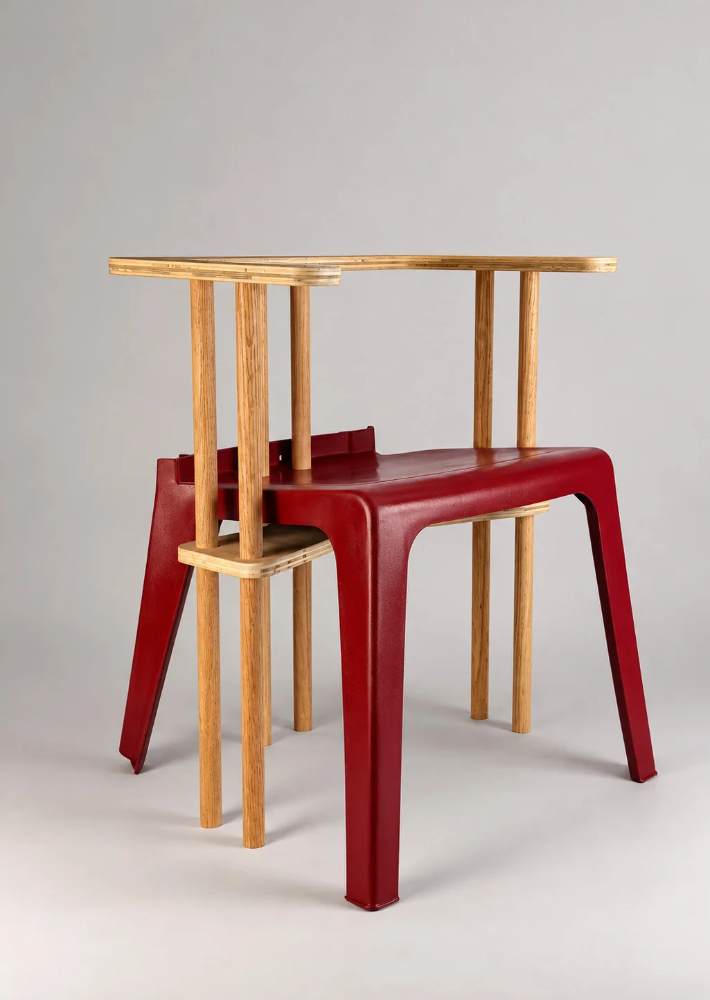
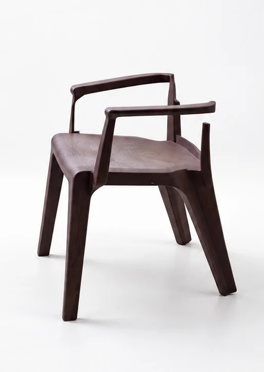
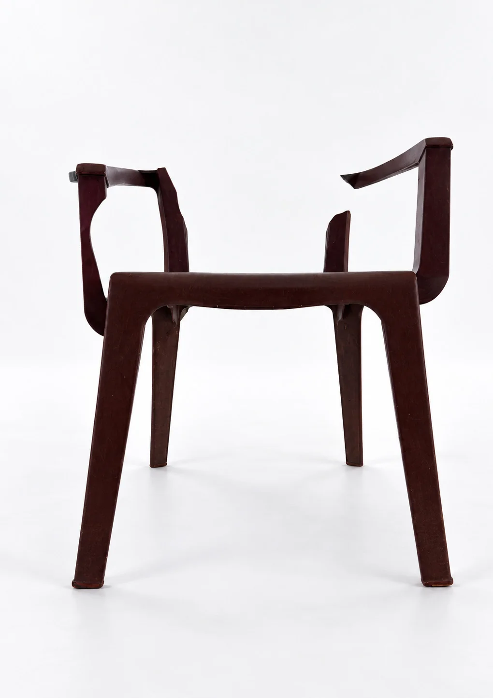
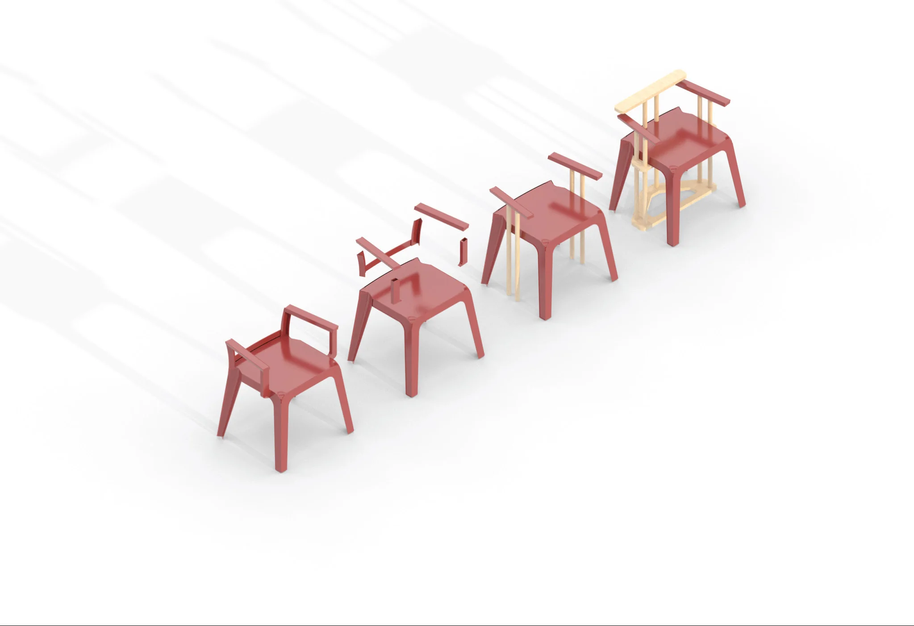
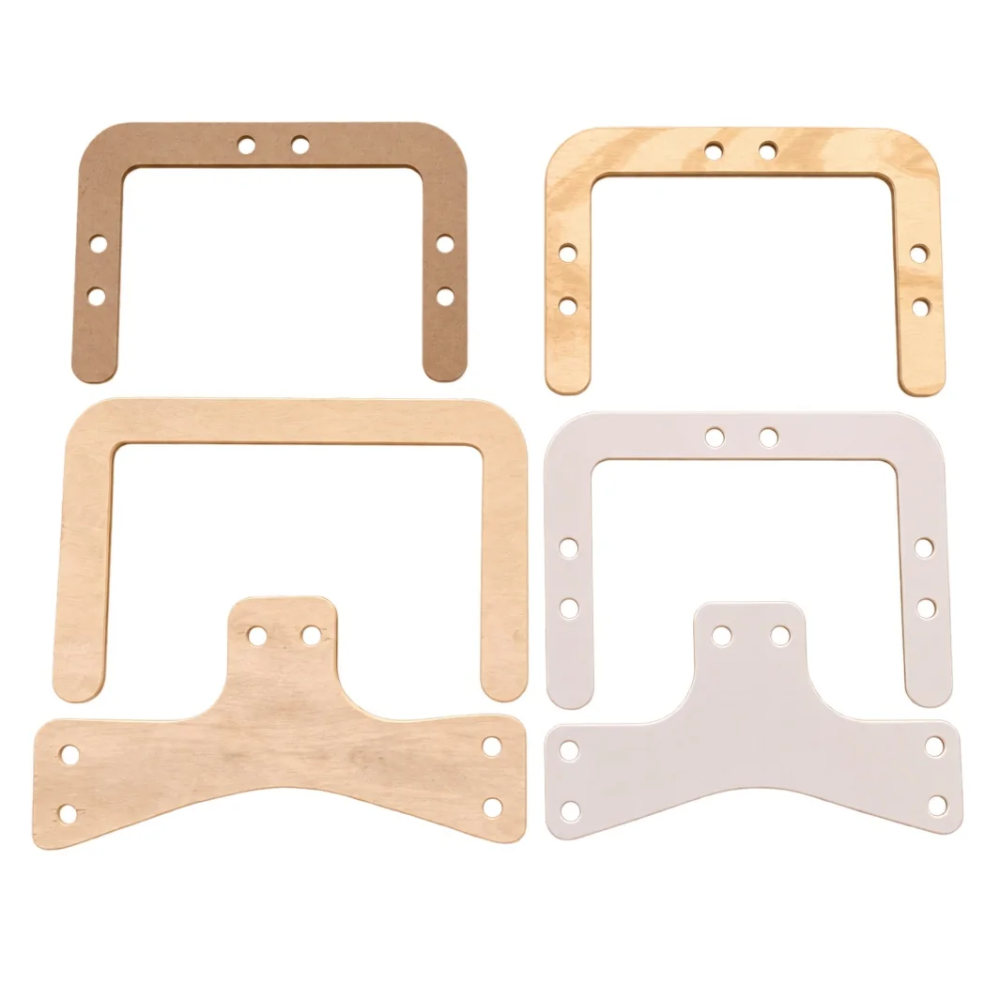
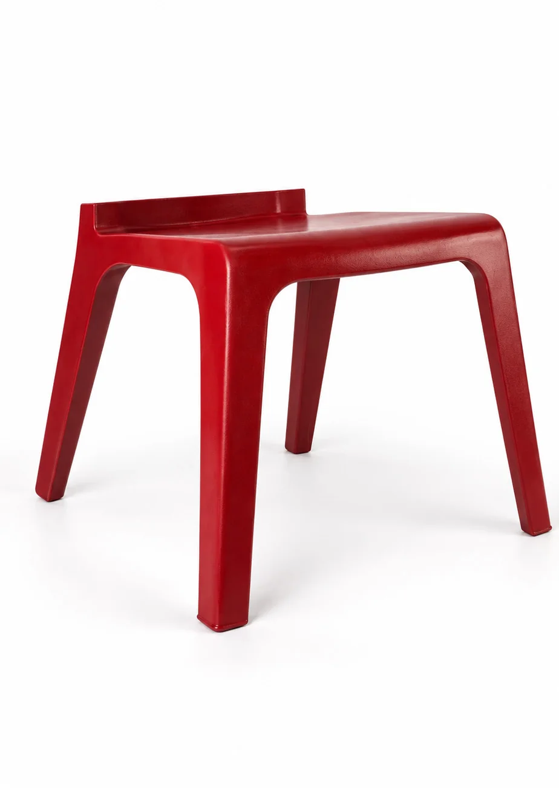

ALTER
A second life for the world's most common chair.
- Year
- 2026
- Context
- Design Studio III
- Process
- Assessment · Repair · CNC milling

Anonymous.
Everywhere.
The subject is a burgundy molded-resin Monobloc — the most produced chair in the world, and one of the most thrown away. This one came in with a broken backrest and damaged arms: the usual end for a chair nobody bothers to repair.


What it
was worth.
Before any repair, the chair was indexed — every break and stress point recorded in a condition report, and its value assessed as found. As found, it was worth almost nothing. That is exactly the problem ALTER takes on.


Repair as
redesign.
The plan replaces what the resin lost with a different material entirely. CNC-milled Baltic birch plywood and one-inch wood dowels take over the failed backrest and arms, joined to the surviving shell — not disguised to match it.


Birch against
burgundy resin.
Material samples tested the plywood layups, dowel joints, and finishes against the original resin. The repair had to be structurally sound — and visually honest about being an addition.


Two materials.
One chair.
The repaired chair keeps the original's damage legible: burgundy resin where it survived, pale birch where it didn't. ALTER argues the world's most disposable chair deserves the same reverence as the icons — repair as a design act, not a compromise.

